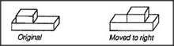
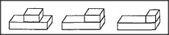

We can get more insight about children from another experiment of Piaget's. A child is shown a short block resting on a longer one and is asked to draw the scene. Next the child is asked to draw a sketch of what might happen if we pushed the upper block a little to the right. At first, the result is more or less what we'd expect.
But when we ask the child to do the same repeatedly, we see a strange result. The top block suddenly grows shorter as it meets the edge of the long block!
To understand what happened, just put yourself in the child's place. You've started to draw the upper edge of the short box, but how do you decide where to stop?

Younger children don't yet possess much ability to draw lines in good proportion. Instead, they tend to use procedures that locate each new feature in some recognizable relationship to other features already represented in the drawing — that is, to easily described places that have previously been depicted. Since there are no such features near the middle of the long block, the child will use the same method, whatever it is, for the first few drawings. But it is easy to describe the location of the end of the long block, and that's why this is where the younger children tend to stop, once they approach that neighborhood. Piaget called this the frontier effect — the tendency to place new features at locations that have easily described relationships to other, already represented features.
Why can't children simply copy what they see? We adults don't appreciate how complicated copying really is — because we can't recall what it was like before we learned to do it. To make a good copy, the child would have to draw each line to a scale and direction consistent with all the others. But these young children are scarcely able to trace the outline of an object with a finger; they certainly cannot mentally transport an entire figure shape from one location to another. So it is actually easier for the child to do what adults might consider more abstract: first to construct a mental description of the relations involved in the scene, and then to design a drawing -scheme to represent those relationships. It can require more skill to produce what we regard as a simple copy or imitation than to produce what we consider to be an abstract representation!